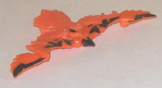
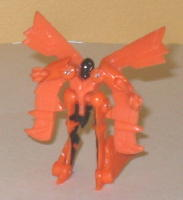
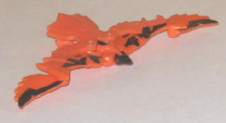
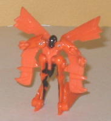
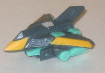
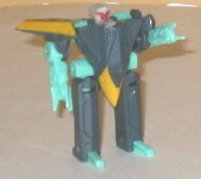
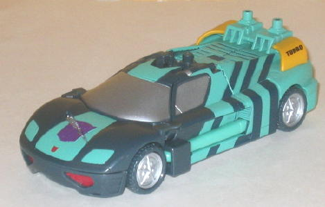
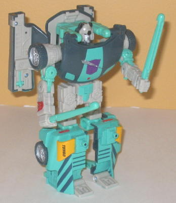

 
Allegiance : Decepticon
Size : Mini-Con (comes in a 4-pack with Sideswipe, Whisper, and Blurr )
Difficulty of Transformation : Very Easy
Color Scheme : Light orange, black, and some red
Rating : 7.5
 Divebomb
Divebomb


Allegiance
: Decepticon
Size
: Mini-Con (comes in a 4-pack
with Sideswipe, Whisper, and
Blurr
)
Difficulty of Transformation
: Very
Easy
Color Scheme
: Light orange, black,
and some red
Rating
: 7.5
(NOTE: Because this is a repaint, this is not a full-blown review. This mainly covers any changes made to the mold and the color scheme, and merely compares it to the Predator Attack Minicon Team. For a review on the mold itself, read the review of the Predator Attack Minicon Team here .)
Like the other Predator
Attack Team Minicon repaints in this year's Botcon set, Divebomb is based
off of the G1 Predacon of the same name. Given that he has a nearly identical
beast mode, it certainly fits, and the primarily orange color scheme certainly
gives him a very G1 Predacon-ish look. The black also serves as a nice
contrast color, though I wish there was considerably more of it, particularly
on his tail feathers. And really, that's my main complaint with Divebomb--
there just isn't enough color variety on him. Except for this teeny tiny
slivers of red painted on his optics, he's molded entirely in orange plastic
and his some black paint apps that are primarily visible in beast mode.
Not a particularly complex scheme-- perhaps some more of that red would
have helped liven things up a bit? It was particularly ingenious to include
Divebomb with Sideswipe, however, since Divebomb's two Minicon ports on
the underside of his beast mode match up EXACTLY with the two Powerlinx
ports on Sideswipe's back end in vehicle mode, essentially giving Sideswipe
a bit of an impromptu "flight mode".
No mold changes have
been made to Botcon Divebomb.
(NOTE: Because the following two toys are repaints, this is not a full-blown review. This mainly covers any changes made to the molds and the color schemse, and merely compares them to Armada Wheeljack w/ Wind Sheer. For a review on the mold itself, read the review of Armada Wheeljack w/ Wind Sheer here .)
 Whisper
Whisper


Allegiance
: Decepticon
Size
: Mini-Con (comes in a 4-pack
with Sideswipe, Divebomb, and Blurr)
Difficulty of Transformation
: Very
Easy
Color Scheme
: Dark bluish gray,
bright coral green, and some dull off-white, red, and dull yellow
Rating
: 6.2
As is usually the case,
Whisper's color scheme is more of a side effect of his larger partner Sideswipe's
colors. The main blue-gray color is a bit boring, but still a serviceable
main color (even if it is way too similar to Wind Sheer's main color),
as is the dull yellow stripes used for his vehicle mode. However... that
is a PUTRID shade of green. Ick, ick ick. It doesn't fit with any of the
other colors at all. Neither does the off-white color used for the head,
though at least it isn't a loud shade like the green is. At least he has
a cool name, though.
No mold changes have
been made to Whisper.
No Stats
 Sideswipe
Sideswipe


Allegiance
: Decepticon
Size
: Deluxe (comes in a 4-pack
with Whisper, Divebomb, and Blurr)
Difficulty of Transformation
: Medium
Color Scheme
: Dark bluish gray,
bright coral green, dull off-white, and some dull yellow, black, silver,
and red
Rating
: 7.3
Sideswipe here has a
rather interesting history. This toy, in very similar colors, was originally
going to be released as a store-exclusive for the original
Universe
line as "Drench", an homage to the obscure G2 character. However, for whatever
reason, it never panned out. Now, "Drench" finally sees a release as a
mirror-verse version of Sideswipe (so named because of the uncanny resemblance
the mold has in robot mode to the
G1 character
).
Also, because of the topsy-turvy world of the mirror-verse and the "slashed"
allegiance symbol on the chest, Sideswipe is a bad guy gone good instead
of a good guy gone bad like Armada Wheeljack-- an interesting twist. As
far as the actual color scheme goes, though... bleh. Like I said with regards
to Whisper, the main color, a bluish-gray, may be dull, but it's still
a decent main color. Not so with that completely ugly, ridiculously loud
coral green, homage to Drench or not. A milky off-white color that becomes
another main color in his robot mode also doesn't help matters much either,
as it's dull and light-colored, neither of which go well with that ugly
green either (and Armada Wheeljack also had a rather similar color in the
same place as that white, as well). On the plus side, though, the head
is nicely detailed, with the head and black looking quite well on the off-white,
and the silver is a nice accent color. So is the yellow, in the lesser
amounts that it's used in.
No mold changes have
been made to Botcon Sideswipe.
Botcon Sideswipe w/ Whisper
and Divebomb easily comprise my least favorite "group" in the 2008 Botcon
set. Divebomb isn't half-bad, even if he could use a bit more color variation,
but Sideswipe and Whisper both just look horrid because of that awful shade
of green. Homage to a cancelled Universe toy or not, their colors just
don't sit well with me. Especially considering how they both share two
major colors with their mass-release versions, I think something else definitely
should have been done with their color schemes.
Review by Beastbot